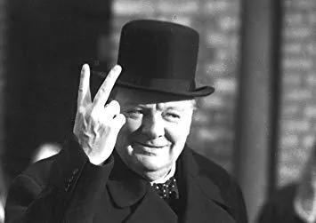

le Quai Winston Churchill
En 1965, l’année de la mort de Winston Churchill, le quai de la Varenne est rebaptisé au nom de cet homme politique britannique. Premier ministre de 1940 à 1945, puis de 1951 à 1955, il fut l'un des protagonistes de la victoire des Alliés sur les puissances de l'Axe pendant la Seconde Guerre mondiale.
